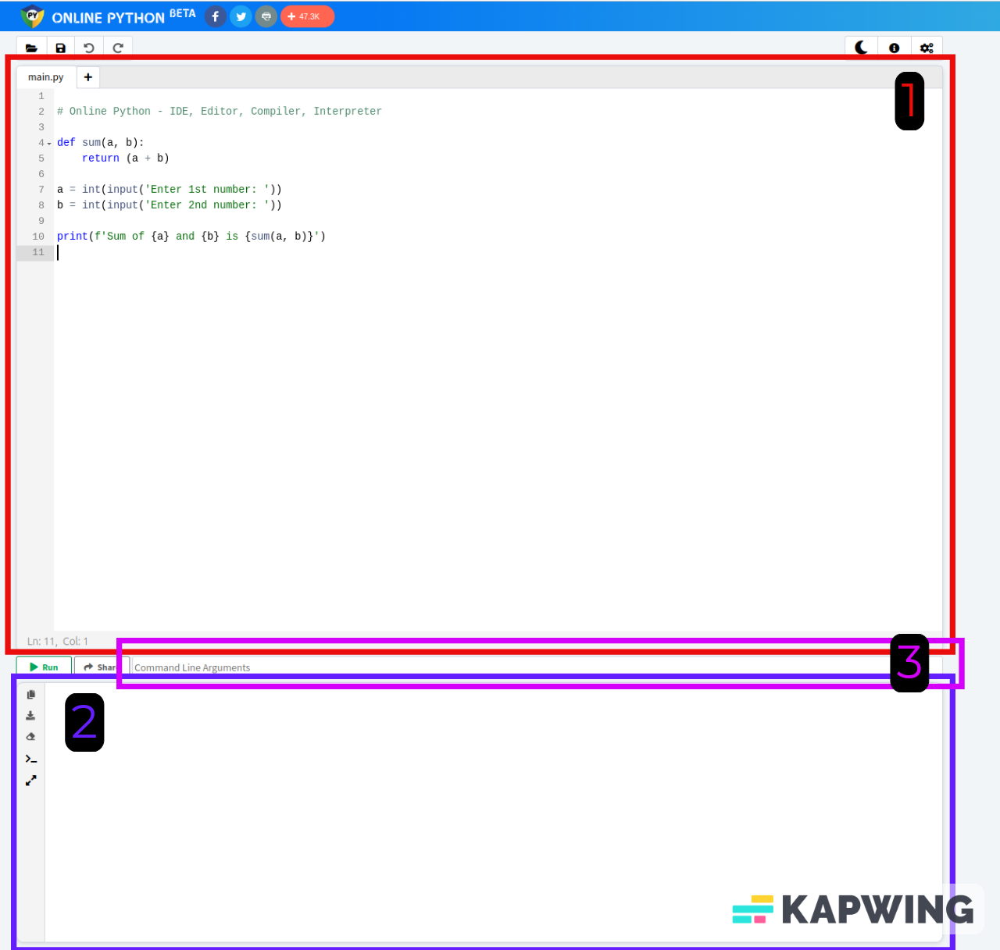
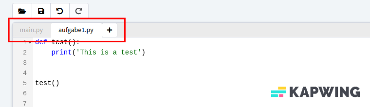
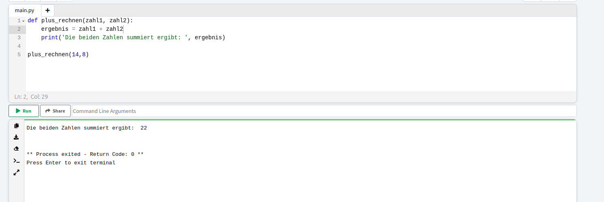
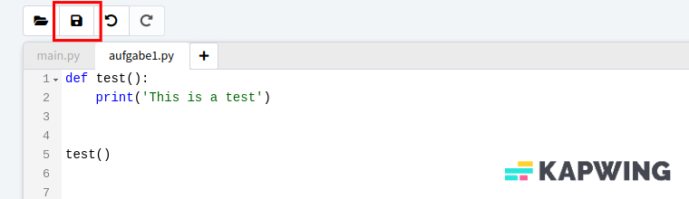

Alles was du wissen musst um auf online-python programmieren zu können
Wir fangen jetzt direkt an mit dem Programmieren und das ohne Installationen oder Einrichtung auf euren Computern.
Öffne die online-python Website in einem neuen Tab. Durch ein Klick mit der Linken Maustaste auf den blauen Text kannst du auswählen, dass die Webseite in einem zweiten Tab geöffnet wird. Dadurch kannst du neben dem Programmiern diese Webseite weiter nutzen um die Aufgaben nachzulesen. Und schon bist du bereit zu programmieren. Keine Installationen oder Anmeldung notwendig!
Was bedeuten die verschiedenen Input Felder?
Die Webseite online-python.com bietet uns die Möglichkeit Python Code zu schreiben und direkt auszuführen. Es gibt dabei 3 Felder, die wir verwenden können.
Das große rote Feld 1, in welchem anfangs auch Code enthalten ist, schreiben wir unser Skript. In einem Skript sind alle Anweisungen an unseren Computer enthalten, die er benötigt um die gewünschte Aufgabe durchzuführen.
In der oberen linken Ecke des Feldes ist ein Reiter mit der Aufschrift "main.py", dieser Reiter ermöglicht es uns, genau wie beim Surfen im Internet, mehrere Skripte gleichzeitig offen zu haben und zu bearbeiten. Das wird dann relevant, wenn Du mehrere Aufgaben programieren möchtest, den Code aber behalten.
Unterhalb des Skript Feldes, sowie den Buttons, befindet sich das Ausgabefeld, Feld 2, in Lila, was auch als Kommando-Zeile bekannt ist. Hier werden alle Aus- und Eingaben für das Programm getätigt. Getätigte Ein- und Ausgaben werden nur solange gespeichter, bis das Programm neu gestartet wird.
Das Eingabefeld (Feld 3, pink) mit dem Platzhalter "Command Line Arguments" benötigen wir heute nicht und kann vernachlässigt werden.
Wie kann ich mein Programm durchlaufen lassen?
Unterhalb des Skipt Feldes befinden sich zwei Buttons, der erste grüne mit der Aufschrift "Run" führt dein Programm aus. Es wird dabei das Skript ausgeführt, auf dessen Reiter du dich befindest. Wenn du in deinem Skript eine Funktion geschrieben hast und das Programm durchläuft wirst du feststellen, dass der Computer keine Ein- oder Ausgaben macht. Denn wenn du nur die Funktion definierst, ist das so, als würdest du dem Computer nur das Rezept vorlegen. Wenn du die Funktion ausgeführt bekommen möchtest, musst du das explizit anfordern. Das machst du indem du den Funktionsnamen, sowie alle notwendigen Input-Parameter in den Klammern eingibst. Nachfolgend siehst du die Definition der Funktion plus_rechnen, sowie das Aufrufen der Funktion in der Zeile 5. In dem Ausgabefeld siehst du das Ergebnis, welches der Computer aufgrund des Print-Befehls ausgedruckt hat.
Wie speicher ich meinen Code?
Um deinen Code zu speichern kannst du durch den Knopf, welcher in dem Bild eingeramt ist. Du wirst dann gebeten einen Namen für die Datein einzugeben. Die Datei wird dann auf deinem Computer im Downloads Ordner gespeichert.
Warum nutzen wir online-python?
Wir nutzen für den Girls Day die Online-Python Webseite, da diese keine Anmeldung oder Installation benötigt um eigenen Python Code zu schreiben und testen zu können. Aus Datenschutzgründen möchten wir keine Anmeldung erzwingen für die Teilnahme und für das Programmierne auf deinem eigenen Rechner musst du die Programmiersprache Python sowie eine passende IDE (Programmierumgebung) installieren. Das kostet Zeit und ist bei Windows, MacOS (Apple Computern) oder anderen Betriebssystem immer etwas unterschiedlich.
Was kann online-python nicht?
Das Programmieren online ist super für das Kennenlernen und ausprobieren. Wenn du aber kompliziertere Skripte schreiben möchtest, ist es wichtig regelmäßige Zwischenspeicherungen zu machen. Das ist bei Online-Python zwar auch möglich, indem man den aktuellen Stand runterläd, aber deutlich aufwändiger wie das Speichern einer Datei währen der Bearbeitung. Aus diesem Grund programmieren wir in unserem Berufsaltag direkt auf unseren Computern.
Was nutzen Programmierer im Berufsaltag?
Wie für die Bildbearbeitung gibt es viele verschiedene Programme, welche von Informatikern genutzt werden, um Code zu schreiben. In unserer Arbeitsgruppe nutzen alle Visual Studio Code, da es ein Programm ist, welches auf allen gängigen Betriebssystemen funktioniert, viele nützlichen Funktionen enthalten sind und es geeignet ist für eine große Anzahl an Programmiersprachen.
Falls du nach dem Girls Day weitere Erfahrungen mit Programmieren machen möchtest, empfehlen wir dir dieses Programm dafür auf deinem Computer zu installieren. Du findest auf dieser Homepage das Programm zum herunterladen sowie Anleitungen zur Installation.
Zu den ersten Programmierschritten